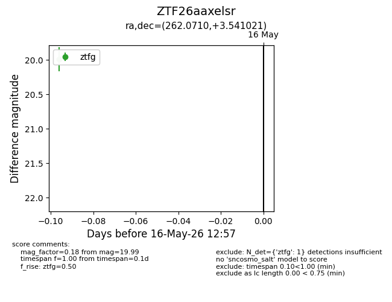
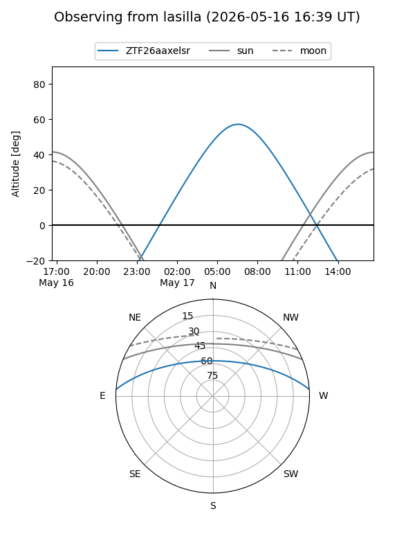
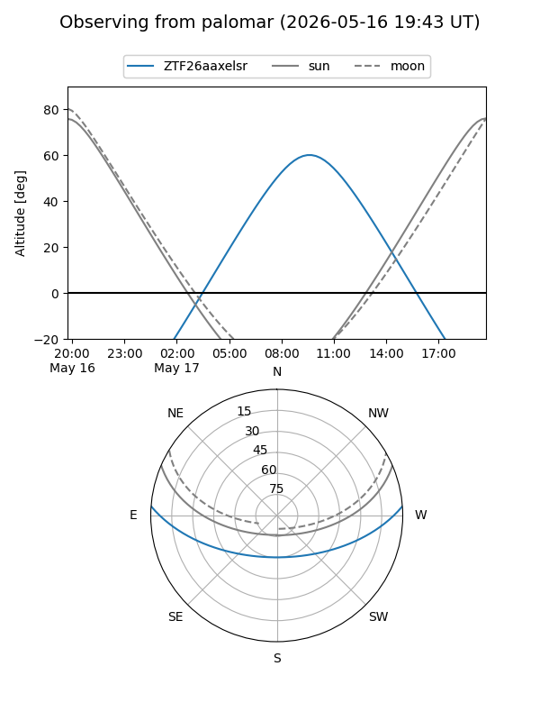

ZTF26aaxelsr
Target ZTF26aaxelsr at 2026-05-16 12:59
Aliases and brokers:
FINK: link
Lasair: link
ALeRCE: link
alt names
ZTF26aaxelsr (ztf,fink_ztf)
Coordinates:
equatorial (ra, dec) = 262.0710,+3.54102
equatorial (HMS+DMS) = 17:28:17.03,+03:32:27.68
galactic (l, b) = (26.4170,+20.08624)
Flags:
Photometry:
last ztfg=19.99
1 ztfg detections
Lightcurve

Visibility


Additional plots